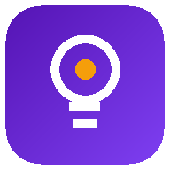

PROTOTYPE — a11y / interaction rework
v2.5.0-a11y-proto
· not the live app

Idea Board
Arch. Middleware Team Innovation Tracker
Tour
Guide
1 online
Switch
+ New Idea
Categories
Priority
High
Medium
Low
Contributors
Board
List
✕ Clear filters
Manage Data